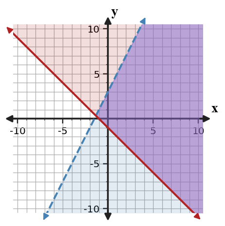

Start with what you can solve independently. Then find different classmates to compare reasoning or help with problems you have not completed. Record your own work and have each partner initial one problem they discussed with you.
Identify the zeros from each factored-form function.
- $y=(x-4)(x+5)$
- $y=-3(x+2)(x-1)$
- $y=2(x-6)^2$
Give the y-intercept of each function without rewriting it.
- $y=x^2-4x-5$
- $y=-2x^2+8x+10$
- $y=\frac{1}{2}x^2-3x+1$
Complete the table to compare what each form reveals for $y=x^2-4x-5$.
| Form | Expression | Feature revealed |
|---|---|---|
| standard | $x^2-4x-5$ | _____ |
| factored | $(x-5)(x+1)$ | _____ |
| vertex | $(x-2)^2-9$ | _____ |
A context asks for the maximum height of a quadratic model. A student chooses factored form because it shows the zeros. Is that a reasonable form choice? Give a reasoned argument and name a more useful form if needed.
In $y\gt 3x+2$, should the solution region be above or below the boundary line?
In $y\le -2x+5$, should the solution region be above or below the boundary line?
Substitute $(1,6)$ into both inequalities and identify which constraint, if any, keeps it from being feasible.
The graph shows a system of inequalities. Name two feasible points and one non-feasible point.

Use two points on each boundary to write the boundary equations, then use the shaded overlap to write the system of inequalities represented by the graph.

A student models a coin problem with $n+q=44$ and $5n+25q=6.80$. The student says the system is ready to solve because the money equation uses cents and dollars together.
Assess the reasonableness of the model, revise it if needed, and explain how the units affect the solution.
A school store sells pencils and pens. A student writes $p+n=60$ and $p+2n=95$ without defining variables.
Analyze the structure of the equations and write a precise interpretation for each variable and coefficient so the model makes sense.
Two students solve the same system.
Maya wants to graph both lines. Luis wants to add the equations immediately. Recommend one approach for a 3-minute paper-only quiz and justify your recommendation with structure from the equations.
Name the parameter that controls vertical shift in $y=a|x-h|+k$.
Name two transformations shown by $y=-\frac{1}{2}(x+4)^2-3$.
Use the blank coordinate plane to graph $y=-\frac{1}{2}(x-2)^2+4$. Plot the vertex and at least four transformed key points.

A model predicts a ball height with vertex $(4,80)$ and zeros at $0$ and $8$. Explain why those features are reasonable together, then identify what would be unreasonable about zeros at $0$ and $6$ with the same vertex.